디자인 전공, 디자인팀 인턴을 거쳐 SSAFY에서 개발을 배웠습니다.
Figma로 설계한 화면을 React · Vue · React Native로 직접 구현해 왔고,
동글서울에서는 첫 로딩을 구간별로 재서 병목 62%를 찾고, 메모리를 690 → 440MB로 줄였습니다.
화면을 그리는 사람에서, 화면이 빠르고 정확하게 돌아가게 만드는 사람이 되었습니다.
실제 서울 지도를 옮긴 3D 멀티플레이 웹 게임 동글서울로 자율 프로젝트 경진대회에서 우수상을 수상하였습니다.
서울시의 슬로건 "SEOUL MY SOUL"에 맞게 관광객에게 효과적으로 홍보할 수 있는 굿즈를 디자인하였습니다.
위장과 도마뱀을 주제로 자카드 직물을 디자인하고 맵핑하여 제안하였습니다.
고대 그리스에서 영감을 받아 직물 컬렉션을 구성하고 맵핑하여 제안하였습니다.
공구한, 패밀링크, Blind Dating, 동글서울에서 UI/UX 설계부터 프론트엔드 구현, 3D 렌더링 성능 최적화까지 맡았습니다.
의류 벤더의 디자인부서에서 인턴으로 근무하며 업무를 보조하였습니다.
동아리원들의 의견을 조율하고 전시와 행사를 기획하고 진행하였습니다.
실제 서울 지도를 옮긴 3D 멀티플레이 웹 게임
3D 월드 구축 · 렌더링 성능 최적화 (Three.js)
구매와 판매를 한 흐름으로 잇는 공동구매 웹
프론트엔드 · UI/UX 디자인
AI 안부전화로 가족 대화를 잇는 Android 앱
프론트엔드 · UI/UX 디자인
AI 아바타와 취향 질문으로 매칭하는 웹 서비스
컨셉 · UI/UX · Vue 프론트엔드
발표 트레일러 (1분) · 클릭하면 재생
랜드마크를 최소 신장 트리로 잇고 A*로 깐 자동 생성 도로는 실제 서울과 모양이 달라, 길과 레이스 코스가 어긋났습니다.
실제 서울 도로망의 구조는 살리되 게임에 맞게 단순화하고, 그 과정을 스크립트로 묶어 지도가 바뀌어도 다시 실행하면 되게 했습니다.
서울 도로, 한강 다리, 2호선 노선을 OpenStreetMap에서 받기
받아 온 노선을 동글서울 좌표로 옮기는 스크립트
섬 모양대로 자르기, 차선, 철도 교차, 끊긴 길 잇기
노선 65개를 데이터 한 파일로 저장
차도, 차선, 교차로, 정지선, 다리를 화면에 그리기
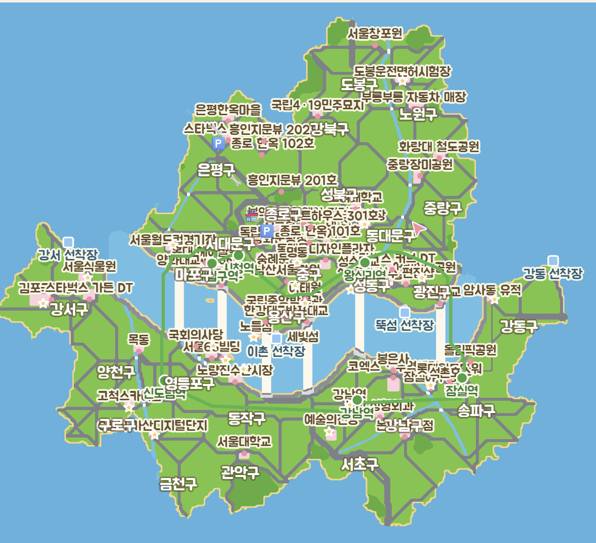
전 랜드마크를 잇는 자동 생성 도로 (최소 신장 트리 + A*)
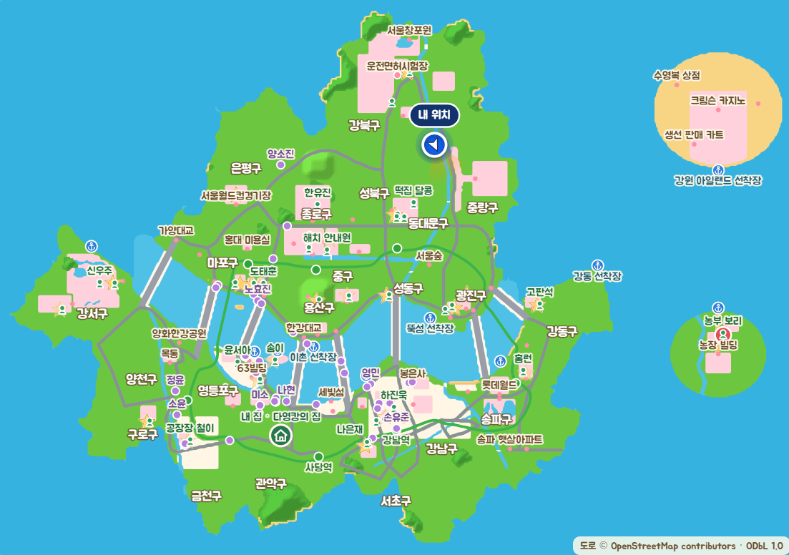
후 실제 서울 도로망을 게임에 맞게 단순화 (겹친 조각, 다리 끝 끊김, 막다른 길까지 정리)
| 문제 | 해결 | 결과 |
|---|---|---|
| 땅 판정을 접속마다 계산 | Vite 플러그인으로 빌드 때 미리 굽기 (52KB) | 로딩 −2초 |
| 상자 수천 개 합치기 | Float32Array에 바로 쓰기 | 0.66~0.8배 |
| 정점 중 고유한 건 33% | 인덱스 지오메트리로 공유 | 690 → 440MB |
| 로딩 뒤 타이틀 멈춤 | GPU 업로드를 60ms씩 나눠 로딩 중에 | 3.9초 → 0 |
| 첫 방문 · 밤 멈춤 | 셰이더 미리 컴파일 | 2.8초 → 0 |
전 / 후 픽셀 비교 0, 지오메트리 해시 2,701 / 2,703 동일
MR마다 같은 조건에서 전 / 후를 번갈아 6쌍 측정한 값 · "셰이더 병렬화"를 의심했지만 재 보니 0.3초뿐이라 버린 가설
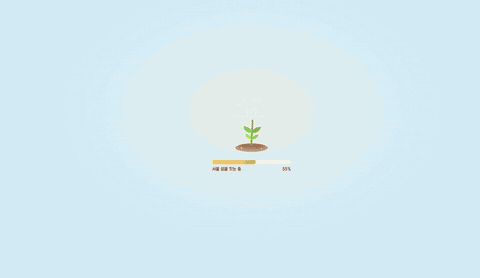
첫 접속 — 새싹 로딩 화면에서 섬 도착까지
야간 자동 배포 뒤, 로그인하면 게임 대신 배경색만 보였습니다.
운영 → 개발 브랜치 역머지에서 코드가 섞여 선언 안 된 이름이 생겼고, 렌더 중 오류 하나가 React 트리 전체를 내렸습니다.
JS는 실행 전엔 이 오류를 모릅니다.
빠진 선언을 복구하는 핫픽스를 바로 배포했습니다.
① 선언 안 된 이름을 찾는 정적 검사 테스트를 CI에 추가 ② 최상단 에러 바운더리로 한 곳이 깨져도 전체가 죽지 않게
"테스트 통과 = 안전"이 아닙니다.
새는 곳을 하나씩 테스트로 막는 것이 운영을 지킵니다.
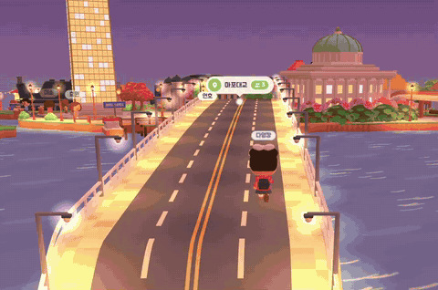
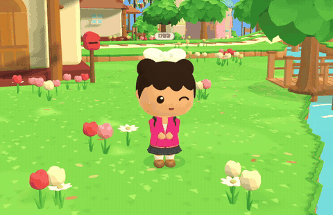
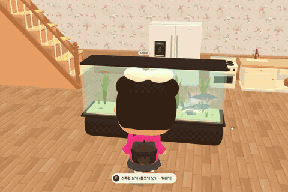
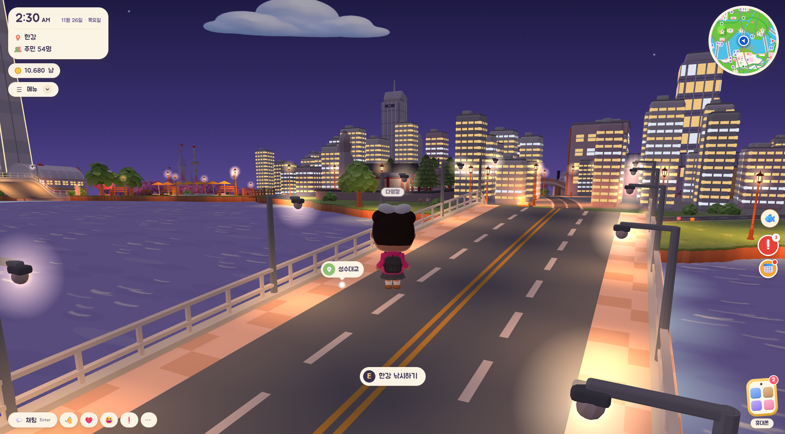
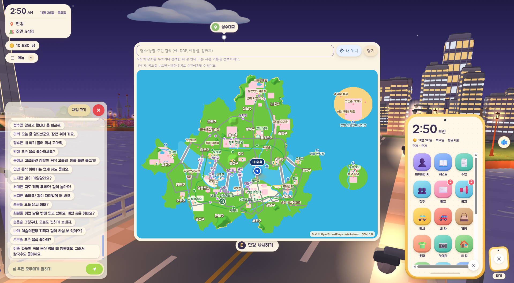
게임 속 시간과 날짜, 지금 있는 구, 접속한 주민 수를 한눈에
섬 주민 모두에게 말하기, 채팅 끄기로 화면을 가리지 않게 정리
실제 서울 지도 위에서 장소, 상점, 주민 검색과 내 위치, 길 안내
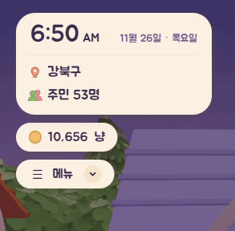
게임 속 시간과 날짜, 지금 있는 구를 한눈에. 주민 수를 누르면 같은 섬 주민 목록과 위치 확인
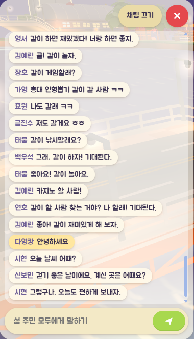
섬 주민 모두에게 말하기, 채팅 끄기로 화면을 가리지 않게 정리
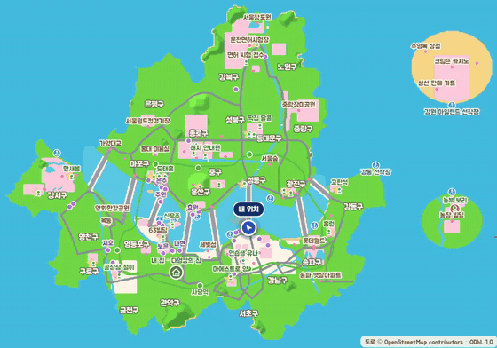
실제 서울 지도를 확대하고 옮기며 장소, 상점, 내 위치를 확인
"판매자 전환"을 나는 쇼핑 중 전환으로, 백엔드는 첫 화면 역할 선택으로 이해해 ERD가 달랐습니다.
프로토타입으로 흐름을 보여 주고 ERD를 함께 조정했습니다.
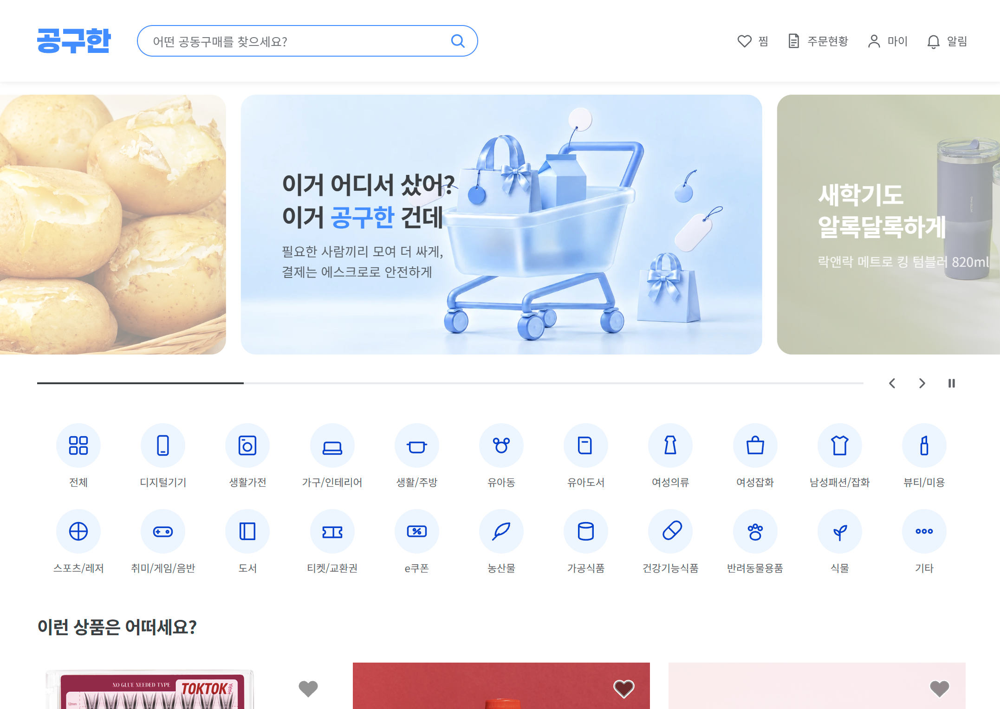
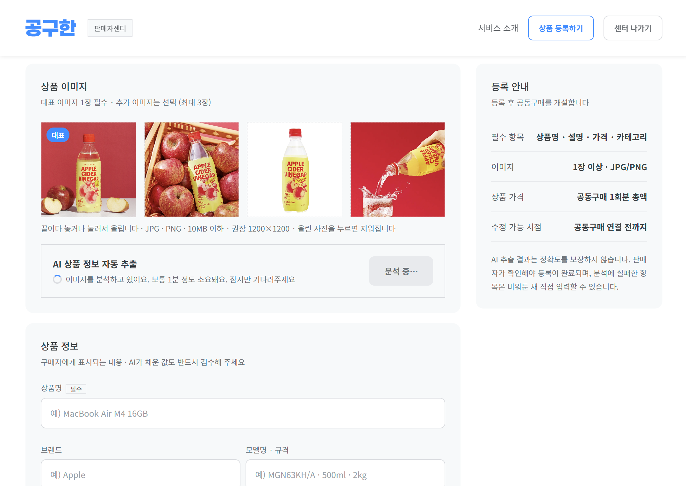
화면마다 "사용자가 지금 가장 먼저 알아야 하는 것"을 정하고,
그것이 첫눈에 보이도록 배치를 바꿨습니다.
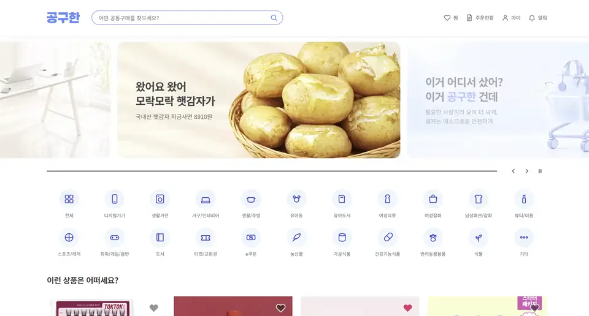
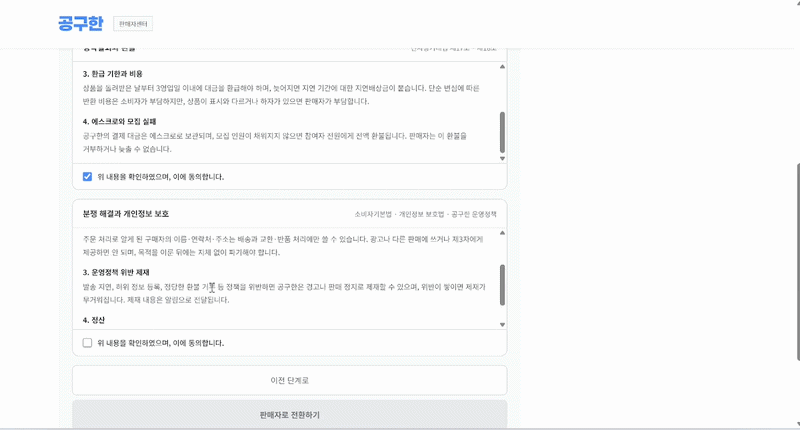
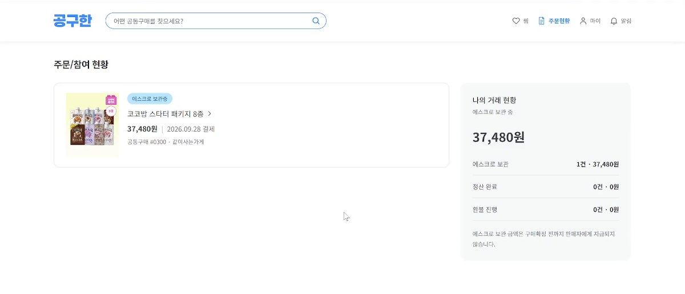
양 끝에 복제본을 둔 [4, 1, 2, 3, 4, 1] 구조로 한 방향으로만 돌게 만들고,
구현하며 부딪힌 브라우저 동작과 접근성을 함께 챙겼습니다.
애니메이션 복구를 requestAnimationFrame으로 했더니, 뒤에 있는 탭에선 rAF가 멈춰 애니메이션이 꺼진 채 굳었습니다.
뒤에서도 실행되는 타이머로 바꿔 해결했습니다.
자리를 옮길 때 트랙 이동만 끄고 배너 투명도 전환은 그대로 두어, 페이드가 두 번 이어졌습니다.
옮기는 순간 둘 다 꺼서 400ms로 줄였습니다.
min()이 든 CSS 변수에 숫자를 곱하면 Chrome이 곱수를 무시해 한 칸만 움직였습니다.
이동 거리를 화면에서 직접 재서 JS로 넣었습니다.
멈춤 버튼을 두고(WCAG 2.2.2), 마우스를 올리거나 키보드로 들어오면 멈춥니다.
움직임 줄이기 설정 사용자에게는 멈춘 채 시작합니다.
새 버전을 배포한 뒤 다시 들어온 사용자는 상품 상세 화면이 통째로 뜨지 않았습니다.
강력 새로고침을 아는 사람만 빠져나올 수 있었습니다.
빌드마다 JS 파일 이름(해시)이 바뀝니다.
그런데 index.html에 캐시 규칙이 없어 브라우저가 옛 index.html을 알아서 캐시했고,
이미 지워진 파일을 요청해 404가 났습니다.
상품 상세처럼 나중에 불러오는(lazy) 화면만 깨진 이유입니다.
index.html만 캐시하지 않고(no-store), 이름에 해시가 붙은 /assets/*는 1년 캐시를 그대로 두었습니다.
내용이 바뀌면 이름도 바뀌니 오래 두어도 안전합니다.
nginx는 하위 블록에 헤더를 하나라도 추가하면 상위 보안 헤더를 물려주지 않습니다.
빠져 있던 보안 헤더를 다시 적고 nginx -t로 확인했습니다.
관리자가 역할을 바꿔도 상대 앱에는 이전 메뉴가 남았습니다.
앱 복귀 · 탭 재선택 시 데이터를 다시 불러오도록 하고 테스트를 추가했습니다.
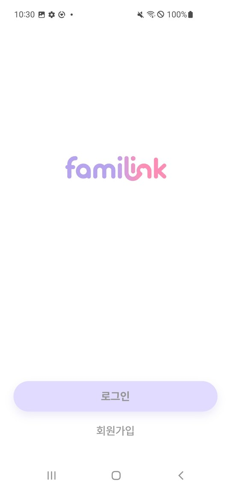
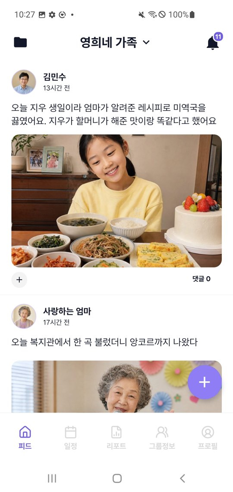
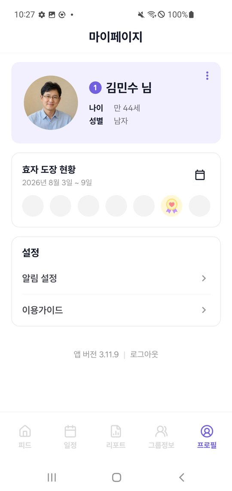
AI 전화 네 화면을 밝은 배경 디자인으로 바꾸고(Kotlin, Jetpack Compose),
통화가 끝나면 감정과 전할 말을 정리해 보여 주는 통화 리포트 화면을 개편했습니다.
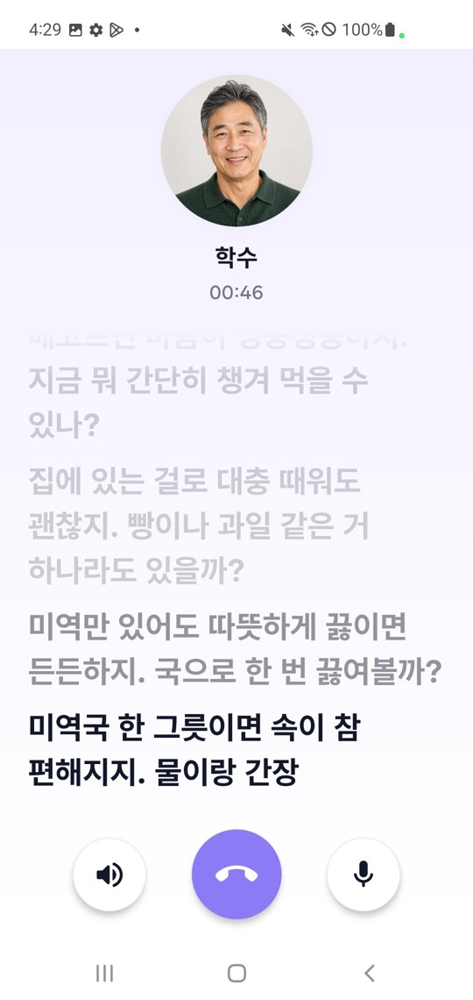
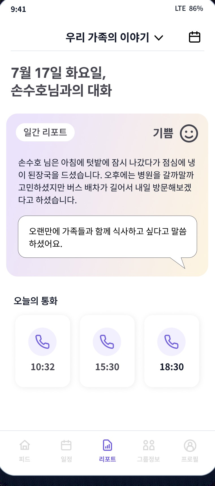
통화 기록이 4건을 넘으면 옆으로 밀어도 목록이 움직이지 않아, 뒤쪽 통화 리포트를 열 수 없었습니다.
가로로 미는 통화 목록이, 피보호자를 좌우로 넘기는 페이저 안에 겹쳐 있었습니다.
Android는 가로로 조금만 밀어도 바깥 페이저가 제스처를 먼저 가져가고 안쪽 목록에는 취소를 보냅니다.
목록을 만지는 순간 페이저를 끄게 했습니다.
에뮬레이터에선 됐지만 실기기에선 실패 — 상태가 바뀌기 전에 첫 드래그가 먼저 지나갔습니다.
JS에서 바꾼 상태가 네이티브의 제스처 판단보다 늦었기 때문입니다.
정석은 gesture-handler · pager-view처럼 제스처를 네이티브에서 처리하는 라이브러리로 안쪽 목록이 제스처를 지키게 하는 것입니다.
하지만 프로젝트에 없던 네이티브 의존성 추가와 재빌드가 필요했고, 마감 직전이라 다른 화면까지 흔들 위험이 컸습니다.
같은 방향 중첩 스크롤은 사용자에게도 헷갈리는 구조라, 충돌을 이기기보다 없애기로 했습니다.
가로 스크롤을 없애 충돌 자체를 제거했습니다.
한 줄에 3건씩 줄바꿈하고, 4번째부터는 아래 줄에 쌓아 세로로 봅니다.
피보호자 좌우 넘기기는 그대로 둡니다.
실기기(갤럭시 S10)에서 4건이 3 + 1 두 줄로 보이고 모두 열리는 것을 확인, 테스트로 고정했습니다.
서버는 알림마다 보낸 사람의 사진 주소를 주는데, 알림 목록에는 항상 이름 첫 글자만 보였습니다.
리포트, 일정처럼 보낸 사람이 없는 알림은 모두 '알'로 보여, 사용자가 사진이 빠진 줄 알았습니다.
서버 응답을 읽는 프론트 파서가 사진 주소의 타입만 검사하고 돌려주지 않았습니다.
화면까지 값이 오지 않아 사진이 그려질 수 없었습니다.
파서가 사진 주소를 넘기게 하고, 빈 문자열은 null로 정리해 대체 표시로 가게 했습니다.
사진은 팀의 이미지 캐시 컴포넌트로 그려 한 번만 내려받습니다.
사진이 없으면 첫 글자 대신 알림 종류 아이콘을 그렸습니다.
아이콘은 눌렀을 때 이동할 탭의 아이콘과 같게 해 어디로 갈지 예측할 수 있게 했고, 원 크기(46)를 사진과 같게 해 목록 줄이 어긋나지 않게 했습니다.
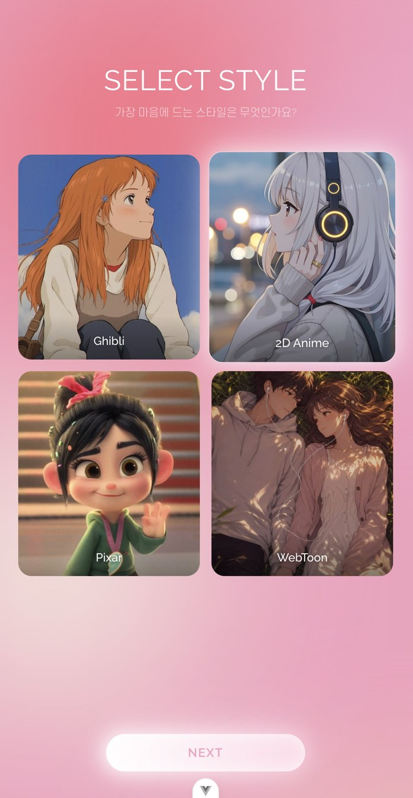
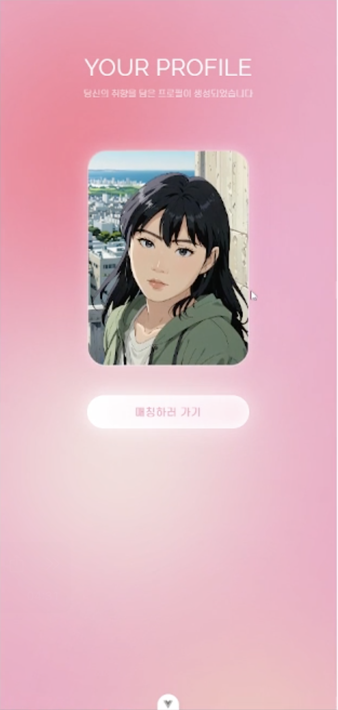
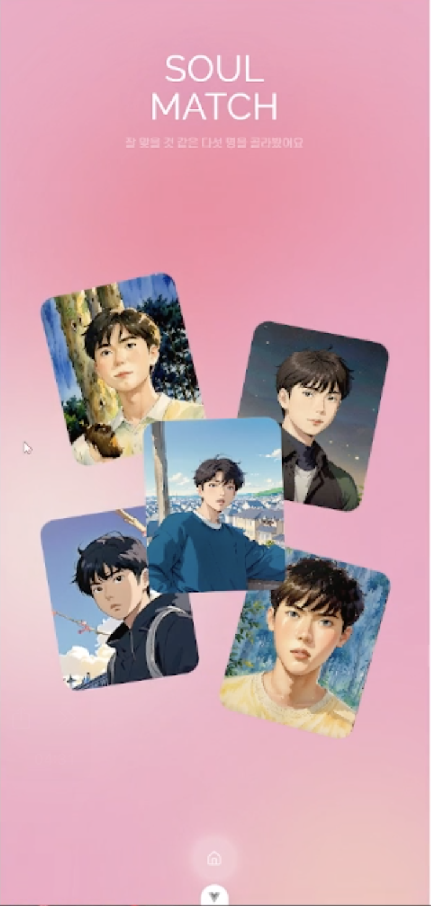
아바타가 만들어지는 동안 취향 질문에 답하도록, 하트를 좌우로 밀어 고르는 화면을 만들었습니다.
마우스와 터치를 같은 코드로 처리하고, 실수로 고르지 않게 기준을 두 단계로 나눴습니다.
touchstart와 mousedown을 같은 함수로 받아, 이벤트 종류에 따라 손가락 또는 마우스 좌표를 읽습니다.
PC와 휴대폰에서 같은 화면이 같은 방식으로 움직입니다.
60px을 넘기면 고를 쪽이 미리 강조되고, 80px을 넘긴 채 손을 떼야 선택이 확정됩니다.
그 전에 놓으면 제자리로 돌아옵니다.
하트는 좌우 130px까지만 따라옵니다. 끌고 있는 동안은 1.15배로 키워 잡고 있다는 것이 보이고,
놓으면 cubic-bezier 탄성 곡선으로 살짝 튕기며 돌아옵니다.
드래그를 시작할 때 window에 이동 · 종료 이벤트를 걸고 끝나면 바로 뗍니다.
손가락이 하트 밖으로 나가도 계속 따라오고, 이벤트가 쌓이지 않습니다.touch-action: none으로 끄는 동안 페이지가 함께 스크롤되지 않게 했습니다.
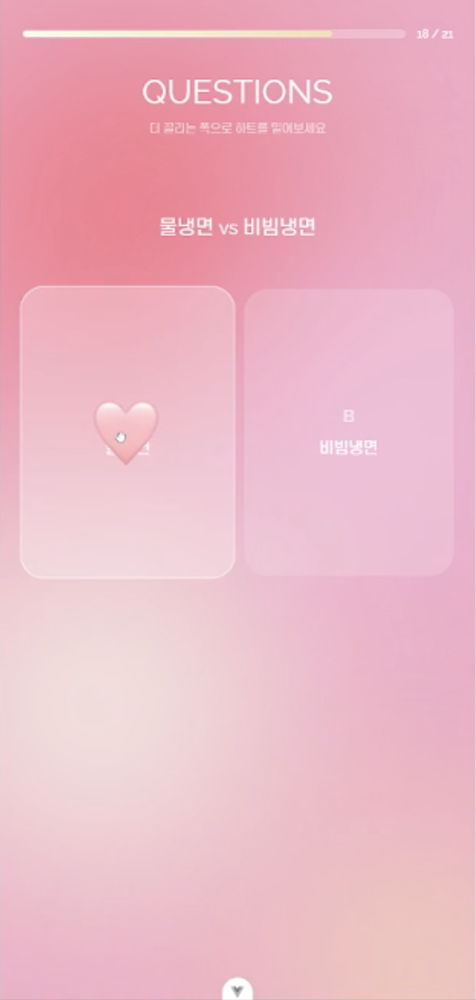
디자인 전공과 디자인팀 인턴 경험으로 시안의 의도를 읽고,
Figma 설계부터 Vue · React · React Native 화면 구현까지 직접 했습니다.
첫 로딩을 구간별로 재서 병목 62%를 찾고 메모리를 690 → 440MB로 줄였습니다.
개선 전후 화면이 같은지 픽셀 비교로 확인했습니다.
남은 단계가 보이는 판매자 전환, 실수로 고르지 않게 기준을 나눈 스와이프처럼
사용자가 지금 알아야 할 것과 다음에 할 일이 보이게 만들었습니다.